Workshop Instructions
In order to understand the workflow and initial parameter sets provided with this tutorial, we must first briefly describe prior studies on the mechanistic origin of gamma rhythms, including our prior modeling work that led to the creation of the parameter sets you will work with [1].
Gamma rhythms can encompass a wide band of frequencies from 30-150 Hz. Here, we will focus on the generation of so called low gamma rhythms in the 30-80 Hz range. It has been well established through experiments and computational modeling that these rhythms can emerge in local spiking networks through interactions of excitatory cell and inhibitory cell interactions, with the period of the oscillation set by the time constant of decay of GABAA-mediated inhibitory currents [2–4], a mechanism that has been referred to as pyramidal-interneuronal gamma (PING). In normal regimes, the decay time constant of GABAA-mediated synapses (~25 ms) bounds oscillations to the low gamma frequency band (~40 Hz).
In general, PING rhythms are initiated by “excitation” to the excitatory (E) cells that causes spiking, which in turn synaptically activates a spiking population of inhibitory (I) cells. In turn, these I cells inhibit the E cells, preventing further E cell activity until the E cells can overcome the effects of the inhibition (~25 ms later). The pattern is repeated, creating a gamma frequency oscillation (~40 Hz, 40 spikes/second). This general principle is schematically described in Figure 1 below. The frequency of the rhythm is paced by this time constant of decay of inhibition, which is mediated by strong GABA-A currents, as well as the excitability of the E cells (if the E cells are very excitable, they can fire before the inhibition has completely worn off, and the oscillation will be faster).

Schematic illustration of the circuit mechanisms underlying PING rhythms.
In this tutorial, we will explore the generation of PING rhythms in the HNN model. We will provide example parameter files and walk through simulations that generate low-frequency gamma activity in both Layers 2/3 and Layer 5, as in [1]. This tutorial relies on a different type of exogenous drive to “activate” the local network than the other tutorials. Here, the necessary excitation to generate spiking in the pyramidal neurons (E cells) that initiates the rhythm (see PING description above) is provided by a continuous train of action potentials with a Poisson distribution (Poisson Input) that activate post-synaptic excitatory AMPA synapses on the pyramidal neurons. This Poisson drive causes the pyramidal neurons to fire, dependent on the chosen conductance of the AMPA currents. The inhibition in the network is strong enough to overcome the Poisson drive and entrain the network spiking into a gamma frequency rhythm.
Of note, gamma rhythms can be generated by circuit mechanisms other than PING, including subthreshold rhythmic exogenous drive. Lee and Jones (2013) examined various mechanisms of generation of gamma activity and described ways to distinguish the mechanisms of generation based on features of current dipole signal [1]. After completing this tutorial, we encourage you to explore alternate mechanisms of gamma generation and to compare to your own gamma data.
Load/view parameters to define network structure & to “activate” the network
Calculating and Viewing Spiking Activity and Power Spectral Density (PSD)
The following tutorial will utilize the HNN-Core GUI.
To install the latest version of the HNN-Core GUI, we recommend creating a new Python (or conda) virtual environment, and then running the appropriate command below within your environment:
pip install --pre hnn-core[gui]pip install --pre hnn-core'[gui]'If you need further assistance with installation, please see the installation instructions in our HNN-Core documentation.
Next, you can launch the GUI from within your environment with the following command:
hnn-guiThis will open the GUI in your local browser, as shown below
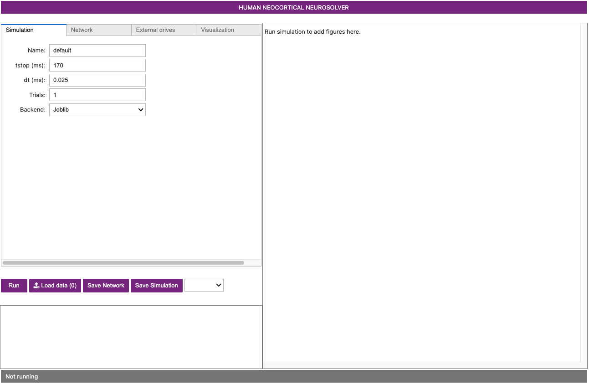
Configuration files that will simulate PING rhythms as described in
the Getting Started section above are provided in the
hnn-data GitHub
repository. You will need to either clone the hnn-data repository or
download its contents to your machine to follow along with this
tutorial. The configuration file we will begin with is
gamma_L5weak_L2weak.json.
Before we load in the configuration file, let’s update the parameters
in the Simulation tab.
If you have the MPI
backend for parallel simulations installed, you can change the
backend from Joblib to MPI for faster simulation times. Otherwise, you
can leave this option as is. We will keep Trials (the
number of trials to simulate) as 1 and the integration timestep
dt (ms) as 0.025 for now. Next, we will change the
tstop (ms) parameter to 250 for a longer simulation.
Lastly, we will change the Name to
gamma_L5weak_L2weak to refect the network configuration
we’ll be starting with.
To load the initial parameters for the inputs that drive our network,
navigate to the External Drives tab and click
Load External Drives. From the popup window, navigate to
the ‘network-configurations’ subfolder in the ‘hnn-data’ directory, and
select the gamma_L5weak_L2weak.json configuration file.
You should now see a dropdown menu labelled ‘extpois (proximal)’ which contains the adjustable drive parameters, as shown in Figure 2 below.

In this simulation, the network will be “activated” with excitatory AMPA synaptic input, distributed in time as a Poisson process and delivered to the somas of the pyramidal neurons in Layer 2/3 (L2/3) and Layer 5 (L5). This noisy input will generate spiking activity in the pyramidal neurons that can initiate the PING rhythm.
Next, navigate to the Network tab and select
Load local network connectivity. From the popup window,
select the gamma_L5weak_L2weak.json configuration file from
the ‘network-configurations’ subfolder in the ‘hnn-data’ directory.
The adjustable network parameters are displayed in the dropdown boxes
under the Connectivity tab, as shown in Figure 3 below.

In our loaded configuration file, all synaptic connections within the network are turned off (weight = 0 μS), except for the reciprocal connections between the excitatory (AMPA only) and inhibitory (GABAA only) cells within the same layer. In other words, the Layer 2/3 and Layer 5 networks are not connected to each other (see the Under the Hood section of the HNN website for further details on connectivity structure).
Note also that the inhibitory conductances within layers are stronger than the excitatory conductances, and there are also strong inhibitory-to-inhibitory (i.e., basket-to-basket) connections. This strong autonomous inhibition will cause synchrony among the basket cells, and hence strong inhibition onto the pyramidal neurons (note: this synapse was not depicted in Figure 1).
:exclamation: Keep in mind that because Layer 2/3 and Layer 5 are not connected, this is not a biologically realistic network. We use this configuration as a starting point for illustrative purposes only, as it will prevent pyramidal-to-pyramidal interactions from disrupting the gamma rhythm.
Now that we have set our Simulation parameters and loaded in both our
external drives and our network configuration, we are ready to run our
simulation. To do so, click the Run button.
:exclamation: Note that each new simulation you run will require a
unique simulation Name as indicated in the
Simulation tab. If you have run a simulation under the same
name previously, you will get an error message stating that the
simulation has failed.
The console below the Run button will print progress as
the simulation is running. Once it is complete, the input histogram and
the dipole will be plotted in the right-most panel, as shown in Figure 4
below.
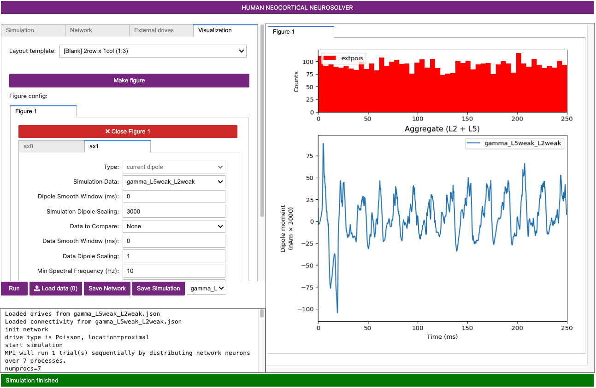
A histogram displaying the Poisson drive to the excitatory cells is shown in the top panel, displaying no clear rhythmicity at the gamma frequency.
We will show the spiking plot in the next section, but for now keep in mind that the Poisson drive provided causes pyramidal neurons to fire, which in-turn cause the inhibitory neurons to fire. Feedback inhibition from the interneurons to the pyramidal neurons generates a regular gamma rhythm via the PING mechanism described above, which we can see in the rhythmicity of the simulated dipole. The sharp downward deflections in the dipole are reflective of the strong inhibition onto the pyramidal neuron somas, which pulls current flow down the dendrites.
To view the Spectrogram, select the Visualization tab.
You will see a Layout template menu at the top, also shown
in Figure 4 above. From this menu, select the
Dipole-Spectrogram (2x1) option and then click the
Make Figure button. This will generate a new figure, as
shown below
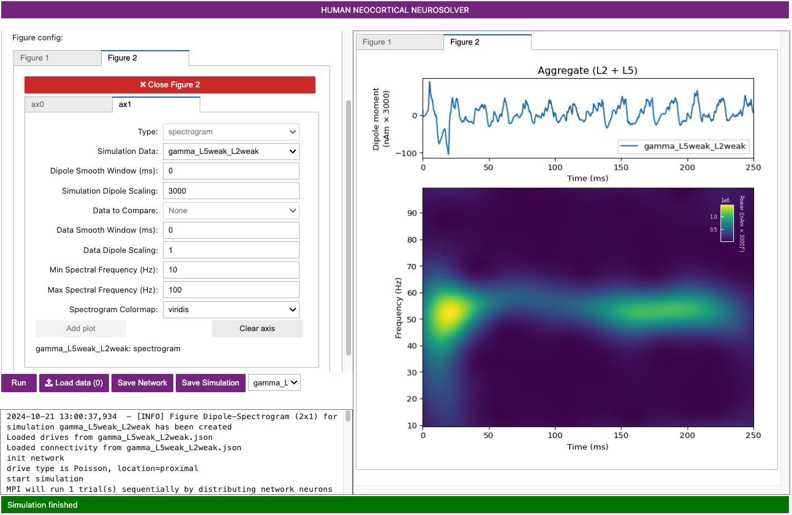
The spectrogram confirms that, for this network and drive configuration, the dipole signal contains oscillatory components in the gamma range (~50 Hz).
We can make a new figure to view the spiking activity generated by the different neuron populations in the network.
From the Layout template menu in the
Visualization tab, select
[Blank] single figure and click the
Make figure button. This will open up a new figure tab with
a single subplot named ax0. Under the Type
dropdown box, select spikes and click
Add plot, as shown in Figure 6 below.
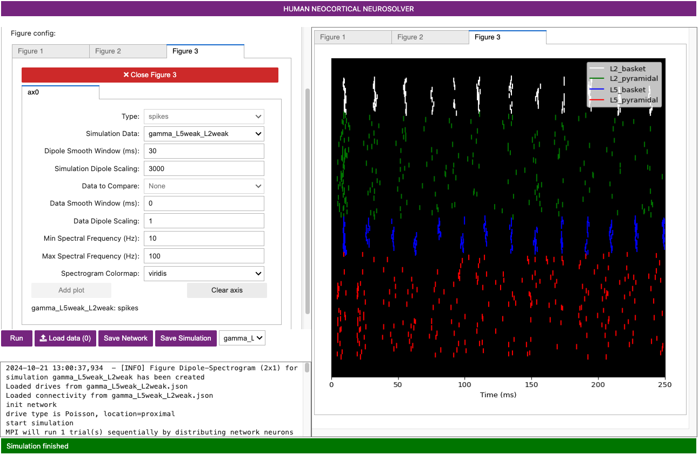
Notice that the excitatory pyramidal neurons in each layer (green and red dots / lines) fire before the inhibitory basket cells in each layer (white, blue dots / lines). The pyramidal neuron firing drives the basket cells to fire. The basket cells are highly synchronous due to the strong inhibitory-to-inhibitory connections. The basket cells then prevent the pyramidal neurons from firing for ~25 ms, generating the PING rhythms. The pyramidal neurons are firing periodically, but with lower synchrony due to the Poisson drive, which creates randomized spike times across the populations (once the inhibition sufficiently wears off). This type of dispersed pyramidal neuron firing is considered “weak” PING - hence the configuration file name including “weak” in the name.
We can further confirm that this oscillation is in the gamma frequency range by viewing the power spectral density of the current dipole signal (average spectrogram across time).
To view the PSD from this simulation, select the
PSD Layers (3x1) option from the
Layout template menu in the Visualization tab,
and click the Make figure button.
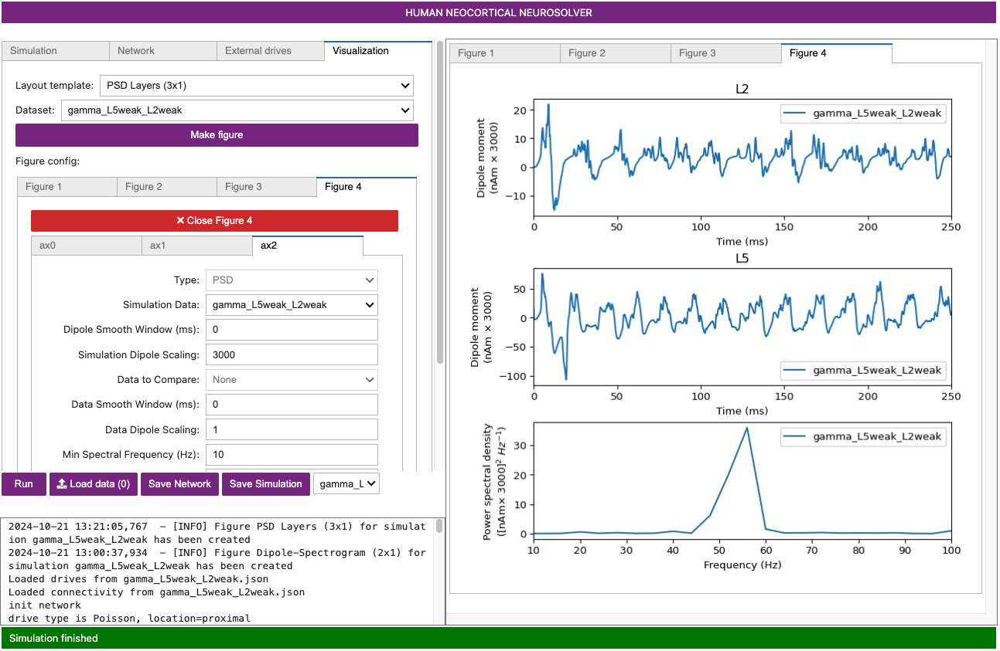
Notice that the power in the gamma band is smaller in Layer 2/3 than in Layer 5. This is reflective, in part, of the fact that the length of the Layer 2/3 pyramidal neurons is smaller than Layer 5, and hence Layer 2/3 cells produce smaller current dipole moments that can be masked by activity in Layer 5 (see [1] for further discussion).
In the following sections, we explore parameter alterations influencing the generation of gamma rhythms.
In Section 4.1, we’ll use HNN to explore the impact of two key parameters controlling gamma rhythmicity: cell excitability and network connectivity
In Section 4.2, we’ll show that gamma can also be generate with only tonic inputs to the pyramidal neurons.
Cell “excitability” can be adjusted in many ways, reflecting the intrinsic properties of a neuron (e.g. membrane resting potential) and/or the influence of external factors such as noisy background inputs or tonic drive via neuromodulation. Parameters controlling network connectivity include the synaptic connection strengths between cells and/or the time constants of synaptic activation. Here, we explore the influence of a few of these factors on gamma rhythmicity. To do so, we will examine activity in only one of the layers, namely Layer 5, by setting all inputs and connectivity in Layer 2/3 to zero.
First, navigate to the Simulation tab and change the
Name to reflect the fact that we will be running a new
simulation. We’ll use the name gamma_L5weak_only.
Next, navigate to the Connectivity section under the
Network tab and change all of the Layer 2/3 weights to
0.
Finally, select the extpois (proximal) drive under the
External drives tab and set the Layer 2/3 weights to 0.
Once you’ve set all of the Layer 2/3 weights to zero, click the
Run button to run the simulation. The simulation will yield
a gamma rhythm that looks similar to the one we observed previously, as
shown in Figure 8 below.
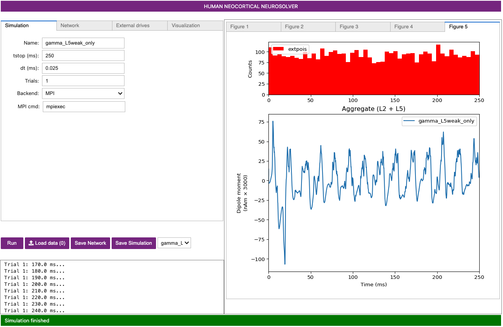
However, if you view the Simulation Spiking Activity and the PSD (see step 3 above) you will see activity from only Layer 5.
You can follow the same steps as outlined in Section 3 above to
generate these visualizations. Note, however, that you need to have the
correct simulation selected via the Dataset dropdown box
under the Vizualization tab and above the
Make figure button, as shown in Figure 9b below.
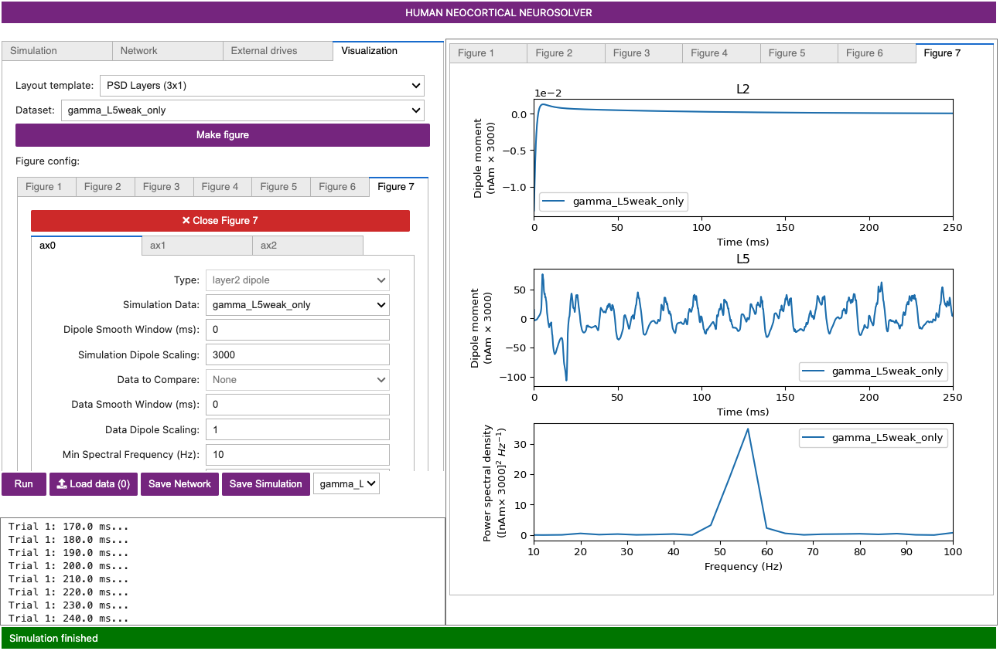
Notice the weak PING rhythm in Layer 5 consisting of weakly synchronous pyramidal neuron firing, followed by synchronous inhibitory neuron firing, that gates the network dipole rhythm to ~50 Hz.
To examine the impact of cell excitability on gamma expression, we can increase the excitability of the Layer 5 pyramidal neurons by adding a tonic applied current that might represent a neuromodulatory influence.
To do so, first select the External drives tab, then
select the Tonic option under Drive and click
the Add drive button. This will create a new external drive
titled Tonic1, as shown in Figure 10 below. Select the new
drive, and then set the aplitude of the tonic drive to the Layer 5
pyramidal neuron to be 6 nA. This level of injected current will be
applied to the soma of the L5 Pyramidal neurons for the duration of the
simulation.
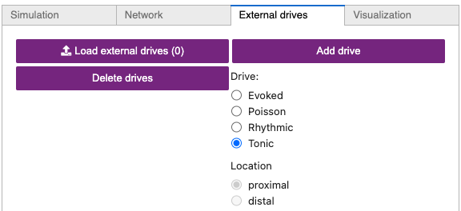
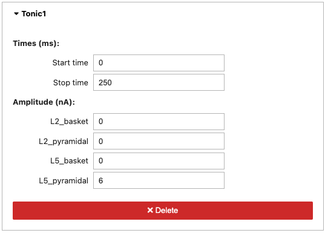
After adding the tonic drives, change the simulation name to
gamma_L5weak_tonic, and then click the Run
button. The simulation will yield the output shown in Figure 11
below.
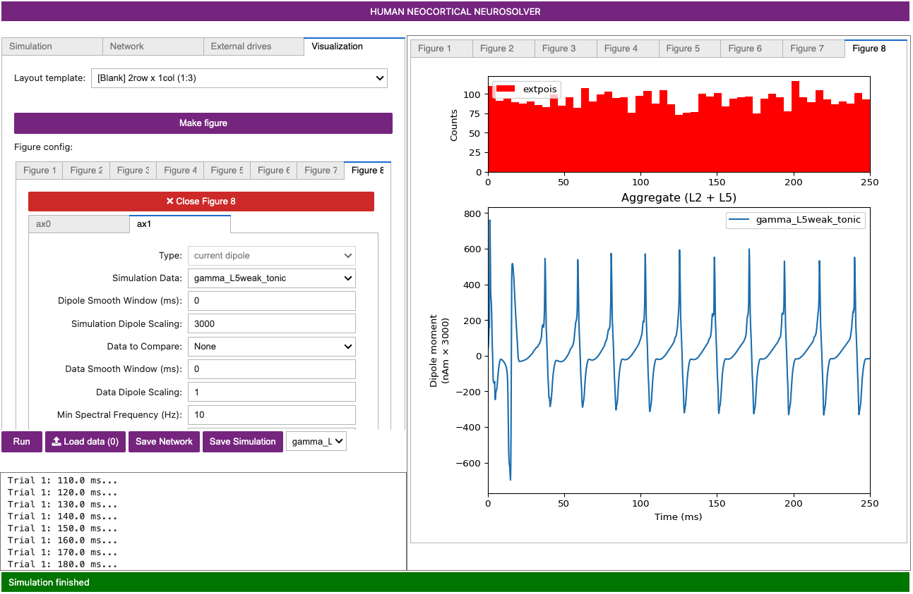
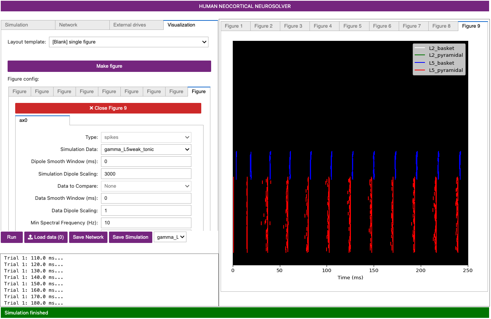
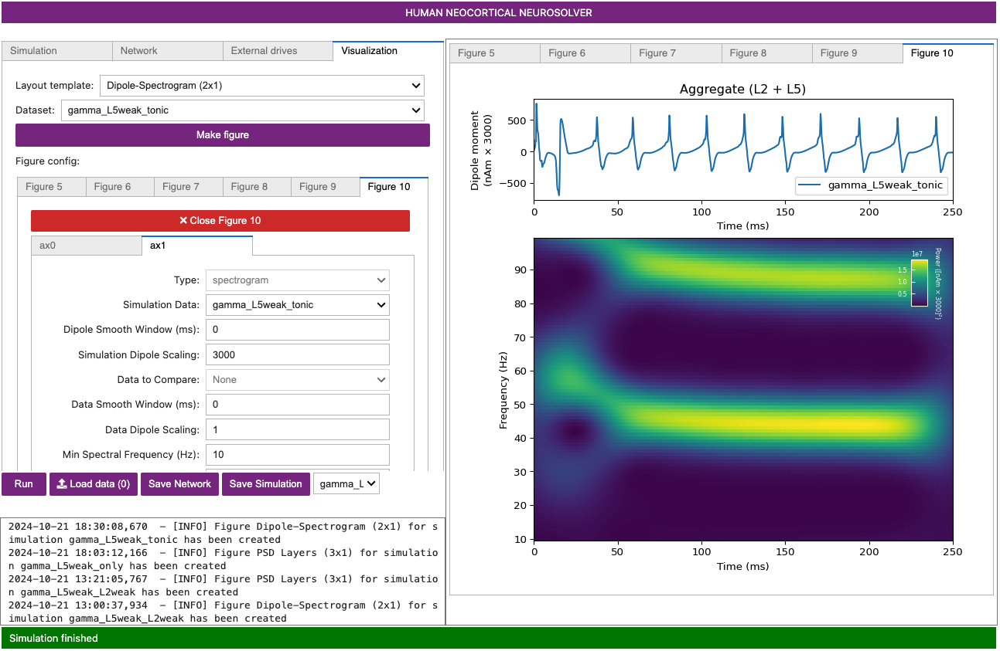
The oscillation as seen in the dipole is more regular with less noise due to the fact that the tonic drive is strong and outweighs the influence of the Poisson drive.
Note in the spike plot that the Layer 5 pyramidal neurons are now firing nearly synchronously. They, in turn, synchronously activate the inhibitory basket neurons, which then inhibit the pyramidal neurons for ~20 ms. After ~20 ms, the tonic drive outweighs the inhibition and the pyramidal neurons fire again, creating a ~50 Hz PING rhythm.
This type of synchronous rhythm is sometimes referred to as “strong” PING. Notice that there is also a ~90 Hz component to the dipole spectrogram. Inspection of the dipole waveform shows that this 90 Hz activity does not represent a separate rhythm, but rather reflects the dipole waveform shape, which has a fast oscillation on each cycle of the slower rhythm due to the strong downward currents induced by somatic inhibition on the pyramidal neurons.
Weakening the excitatory connections
We’ll now explore the impact of adjusting synaptic connectivity parameters in the network.
First navigate to the Connectivity section of the
Network tab. From there, change the weight of the
L5_pyramidal->L5_basket connection from 0.00091 to
0.000091, making it 10 times weaker.
Change the Name of the simulation to
gamma_L5weak_tonic_02, and run the simulation. As we’ve
done in previous sections, you’ll want to generate visualizations that
show the spike plot and the spectrogram. In Figure 12.B, we display the
spiking and the spectrogram in a single plot rather than two separate
plots.
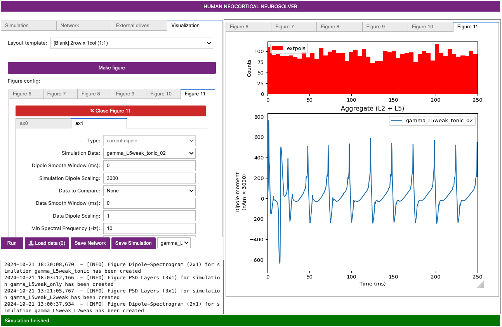
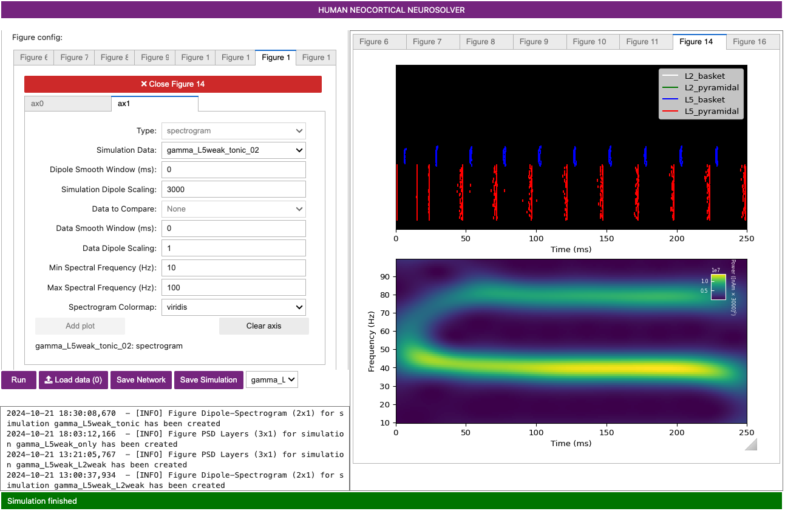
It is also instructive to view visualizations for different
simulations in the same figure to compare differences. Figure 13 below
shows the PSD for gamma_L5weak_tonic (top subplot) and
gamma_L5weak_tonic_02 (bottom subplot)
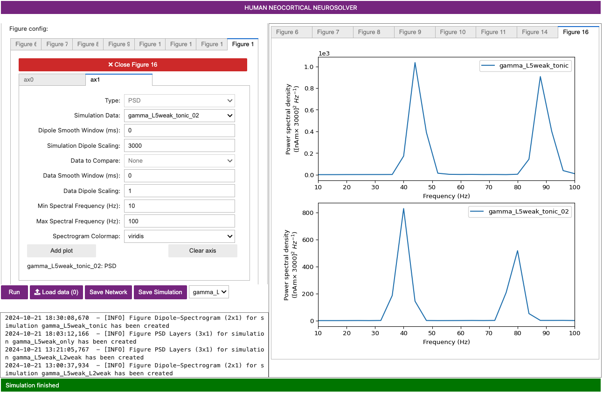
Notice that the gamma rhythm has now slowed from ~45 Hz to ~40 Hz. This slowing is due to the fact that the excitatory-to-inhibitory connection was weakened. Due to this change, it now takes longer for the basket cells to respond to the excitation, and hence the rhythm is slowed.
Removing the inhibitory connections
Next, we’ll explore the importance of the inhibitory connections in setting gamma rhythmicity. First, set the L5 Pyr -> L5 Basket back to 9.1e-4 μS. Now remove the Tonic Input to the Layer 5 cells by setting the amplitude of L5 Pyr to be 0.0 nA. We are now back to the Layer 5 only weak PING parameter set that we started with in this section (confirm this by saving the file with a new name and running the simulation).
Next, remove the inhibitory to inhibitory connections by loading:
Set Parameters > Local NetworkAdjust L5 Basket -> L5 Basket weight from 7.5e-3 μSto 0 μS as shown below.

Save the simulation with a new simulation name (e.g., “gamma_L5weak_only_noinh”) in the Set Parameters dialog box and run the simulation by clicking Start Simulation in the main HNN GUI. The simulation will then yield the following output.

Notice that the rhythm is still present but less regular and noisier (compare with first waveform image in this section 4.1 above). You can also observe this in the Simulation Spiking Activity (below). This lack of regularity is due to the fact that removal of the inhibitory to inhibitory connections caused the inhibition to be less synchronous and noiser, and hence the PING rhythm is in turn noisier.

Reducing the GABAB decay time
Lastly, we’ll see that the time constant of inhibitory decay is an essential parameter controlling the frequency of the PING rhythm. In the Local Network dialog box adjust the strength of the L5 Basket -> L5 Basket weight back to 7.5e-3 μS, and keep all other parameters the same. Next, load the “Cell Parameters” by clicking:
Set Parameters > Cell ParametersClick on the “L5 Pyr Synapses” tab and adjust the GABAA decay time from 5.0 ms to 2.0 ms (note in these simulations the weight of the GABAB synapses are all set to zero), as shown below.

Save the simulation with a new “Simulation Name” in the Set Parameters dialog box: “gamma_L5weak_only_fasterinh”, and run the simulation by clicking Start Simulation in the main HNN GUI. The main HNN GUI will now show the following output.

Notice that the rhythm is now faster at 60 Hz. As can be seen in the Simulation Spiking Activity viewer below this is due to the fact that the faster decay of inhibition allows the pyramidal neurons to recover more quickly from the inhibition and respond to the Poisson drive, resulting in a faster network oscillation.

How else might the excitability of the cells be adjusted? What happens to the network dynamics? Can you make the oscillation faster or slower?
How else might the synaptic connections in the network be adjusted to impact gamma? What happens to the network dynamics? Can you make the oscillation faster or slower?
Gamma rhythms can be created in neworks where the pyramidal neurons do not fire on their own but their activity is still regulated by interneuron firing (interneuron mediated gamma: ING). Can you adjust parameters to create such an oscillation in the network?
The next exercise involves setting up a PING rhythm in both layer 2/3 and layer 5 by providing tonic inputs to the pyramidal neurons, as opposed to the stochastic Poisson inputs described above. HNN provide the capability of applying a constant depolarizing current injection to the soma of neurons representative of a “tonic input”.
A parameter set that will simulate PING rhythms through “tonic input” to the pyramidal neurons can be downloaded via the following hyperlink: gamma_L5ping_L2ping.param. This file can also be found in the HNN param subfolder.
Load the parameter file values by navigating to the main GUI and clicking:
Set Parameters From FileThen select the file from HNN’s param subfolder or from your local machine. In this simulation, tonic input is given to the pyramidal neurons in Layer 2/3 and Layer 5 to generate spiking that initiates PING.
To view the parameters, return to the main GUI and click:
Set Parameters > Tonic InputsYou should see the values of adjustable parameters displayed in the dialog boxes below. Note that in the dialog boxes, only the pyramidal neurons are set to receive depolarizing current injections (tonic inputs). These inputs start at the beginning of the simulation (0 ms) and stop at its end (indicated with stop time of -1.0), with slightly stronger input to Layer 5 (6 nA) than to Layer 2/3 (4 nA).

|

|
To run this simulation, return to the main GUI window and click:
Start SimulationThis simulation runs for 550 ms of simulation time. Once completed, you will see output similar to that shown below.

In this simulation, there are no spiking inputs provided to the model, so the HNN GUI does not display a histogram of driving inputs. Instead, a current clamp provides a constant depolarizing current to the pyramidal neuron somas, causing the cells to fire. This firing initiates the PING rhythm through mechanisms similar to that described above. In contrast to the Poisson drive, the constant depolarization to pyramidal neurons creates higher excitability in the pyramidal neurons, causing more synchronous firing. In turn, this causes the interneurons to fire synchronously, hence producing a higher amplitude gamma oscillation. Here, the rhythmic dipole displays even sharper downward deflections, caused by the strong synchronous inhibition onto the pyramidal neuron somas that pulls current flow down the dendrites. This PING rhythm has less variability and would be considered “strong” PING rather than “weak” PING.
The corresponding spectrogram and PSD (View menu> View PSD) (shown below, right column) confirms that, for this parameter set, the dipole signal contains strong oscillatory components in the gamma range (~45 Hz) in the net dipole with, once again, a strong contribution from Layer 5. Layer 2/3 is oscillating at higher frequency(~65 Hz) with lower amplitude (note: Layer 2/3 and Layer 5 are not synaptically connected to each other in this simulation). There is an additional higher frequency component near 80 Hz in Layer 5. A closer look at the dipole currents from Layer 5 (View menu > View Simulation Dipoles) (shown below, left column, middle panel) shows that the 80 Hz activity comes from sharp deflections in the dipole waveform along with a small amplitude peak that together create high power at 80 Hz in the frequency domain. A closer look at the spiking activity in each population below will reveal the mechanisms creating these waveform shapes.

|

|
To view the spiking activity of each neuron in the population, return the main GUI window and click:
View > View Simulation Spiking ActivityThe HNN Spike Viewerwill appear, as shown below. The PING mechanism is seen in each layer where the pyramidal neurons fire, causing the inhibitory neurons to fire, which consequently keep the pyramidal neurons from firing until their excitation outweighs the inhibition. Notice that the firing rate of Layer 2/3 pyramidal and basket neurons is faster than that of Layer 5 neurons. This is because although the Layer 2/3 pyramidal neurons receive a lower current injection, they have shorter dendrites and therefore the current flow up and down the dendrites is faster. Further, the Layer 2/3 pyramidal neurons have lower spiking thresholds due to their intrinsic properties.
In each layer, the inhibitory neurons are firing synchronously and causing strong somatic inhibition on the pyramidal neurons, resulting in fast downward current flow that creates the sharp dipole deflections seen in the dipole waveforms above. Notice that the small peak in the Layer 5 dipole that contributes to the 80 Hz activity is due to the strong depolarizing current on the pyramidal neurons that causes their voltage to rise quickly even before the inhibitory neurons fire. As an exercise, play with the current injection amplitude provided to the different neurons to see how it affects the generated rhythm.

In the next example, we will apply 50 Hz rhythmic synaptic inputs through proximal and distal projection patterns to produce gamma oscillations similar to those shown in Figure 8A of (Lee & Jones, 2013) [1]. In this simulation, the strength of the input is set so that the cells remain subthreshold and gamma rhythms emerge from subthreshold current flow in the pyramidal neuron dendrites, rather than local spiking interactions as in the PING mechanisms described above.
The parameter set that will simulate subthreshold gamma oscillations through rhythmic inputs to pyramidal neurons in proximal and distal projection patterns can be downloaded via the following hyperlink gamma_rhythmic_drive.param. This file can also be found in the HNN param subfolder.
Load the parameter file values by returning to the main GUI window and clicking:
Set Parameters From FileThen select the file from HNN’s param subfolder or from your local machine. To view the parameters, click:
Set Parameters > Rhythmic Proximal Inputs
Set Parameters > Rhythmic Distal InputsYou should see the values of adjustable parameters displayed in the dialog boxes below. In this example, the pyramidal neurons receive inputs, and the interneurons do not. The proximal and distal inputs start at 50.0 and 55.0 ms, respectively, and are slightly out of phase to allow synaptic inputs to effectively push current flow up the dendrites followed 5 ms later by current flow down the dendrites. Additionally, the input frequency for both proximal and distal inputs is set to a 50 Hz rhythm provided by “bursts” of excitatory synaptic input (driving burst frequencies; inter-burst-interval of 20 ms), with minimal noise within each driving burst (burst stdev of 2.5 ms). Please review the Alpha/Beta tutorial for a detailed description of the driving bursts. Note also that the amplitude of the inputs, which are only provided to the Layer 5 pyramidal neurons, is set to a small value (4e-5 μS), which produces only subthreshold responses in the Layer 5 pyramidal neurons. As a result, the gamma mechanism shown in this simulation is fundamentally different from the previous examples, since it does not rely on the local-spiking interactions that underlie the PING mechanism.

|

|

|

|

|

|
To run this simulation, return to the main GUI and click:
Start SimulationThis simulation runs for 550 ms of simulation time. Once completed, you will see output similar to that shown below.

|

|
Histograms of the proximal and distal drives are shown in the top of the HNN GUI. The net dipole signal in this simulation shows a clear gamma rhythm at ~50 Hz, produced by the Layer 5 pyramidal neurons. Note, here the Layer 2/3 pyramidal neurons are not receiving any drive and hence do not contribute to the dipole current. There is only minor stochasticity to the synaptic inputs (burst stdev of 2.5 ms). Also note that the waveform shape in this simulation is distinct from the previous examples, lacking the sharp deflections produced by neuronal firing and strong somatic inhibition during PING.
In the final simulation of this section, we will add more noise to the previously applied 50 Hz rhythmic drive, described in section 4.2. The parameter set can be loaded by clicking the following hyperlink: gamma_rhythmic_drive_more_noise.param. This file can also be found in the HNN’s param subfolder.
To load the file, navigate to the main GUI window and click:
Set Parameters From FileThen select the file from HNN’s param subfolder or from your local machine. Next, view the parameters by clicking:
Set Parameters > Rhythmic Proximal Inputs
Set Parameters > Rhythmic Distal InputsYou will see the values displayed in the dialog boxes below. Note that additional noise is present in the driving proximal and distal inputs, which now have Burst stdev = 5.0 ms, as compared to 2.5 ms in the previous simulations. This increase adds variability to timing of the burst of synaptic drive each input provides, and hence adds “noise” to the network.

|

|
To run this simulation, navigate to the main GUI window and click:
Start SimulationOnce completed, you will see output similar to that shown below.

|

|
In the simulation above, due to the higher variability in synaptic input timing, there is now more variability in the temporal dynamics and frequency content seen in the dipole signal. This is seen in the intermittent 50 Hz gamma events seen in the wavelet spectrogram. Here there is also a high power 25 Hz event that emerges, and both frequencies create peaks in the PSD from this single trial simulation, shown above.
Go back to the gamma_L5weak_L2weak.param file and add recurrent synaptic connectivity between pyramidal neurons within a layer (e.g., L5 Pyr -> L5 Pyr weight = 9.1e-4(μS)); how does that influence the gamma rhythm? What happens as you change the strength of this connection?
Adjust the synaptic time constants of GABAA or other synapses; can you alter the peak gamma frequency?
Add connectivity between Layer 2/3 and Layer 5? Is gamma rhythmicity retained? Under what circumstances might gamma persist?
We have not observed strong gamma activity in our SI dipole data, and as such have not provided an example data set to compare simulation results to, as in the other tutorials. However, simulation results can be compared to recorded data, as described in the ERP and Alpha/Beta tutorials. Follow steps 1-4 above using your data and parameter adjustments based on your own hypotheses.
Lee, S. & Jones, S. R. Distinguishing mechanisms of gamma frequency oscillations in human current source signals using a computational model of a laminar neocortical network. Front. Hum. Neurosci. 7, 869 (2013).
Cardin, J. A. et al. Driving fast-spiking cells induces gamma rhythm and controls sensory responses. Nature 459, 663–667 (2009).
Vierling-Claassen, D., Cardin, J. A., Moore, C. I. & Jones, S. R. Computational modeling of distinct neocortical oscillations driven by cell-type selective optogenetic drive: separable resonant circuits controlled by low-threshold spiking and fast-spiking interneurons. Front. Hum. Neurosci. 4, 198 (2010).
Buzsáki, G. & Wang, X.-J. Mechanisms of gamma oscillations. Annu. Rev. Neurosci. 35, 203–225 (2012).